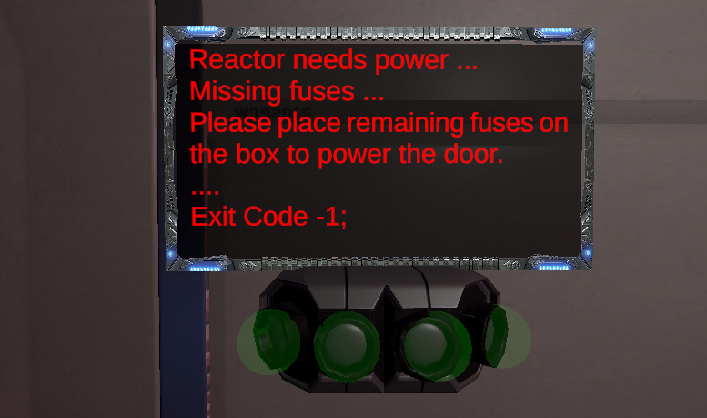

Designer Goals
I aim to make the objective of the game as simple as possible but still enjoyable. The reason behind this is that I will be focusing more on how the game feels rather that the chore mechanics. The best thing about horror games, especially the psychological genre, is that it leaves a lot to the player’s imagination and constantly plays with their expectations. The objective of the game is to gather 4 fuses to power up the reactor door and reset the electricity while they are being haunted by an unknown entity.
Core Goal
My main goal is to create a memorable horror experience. I aim to put the player in the character’s shoes and make the Strider’s struggles, their struggles.
Tone and Mood
The game main objective is to create a gloom and claustrophobic atmosphere, it will be achieved using poor lighting and close spaces. Background sound will also help, as well as using fog to set up a cold atmosphere.
Genre
The game will be utilizing psychological horror theme to tell the story of a stranded man on the vast emptiness of space.Throughtout the game the player will experience visions and other sort of torments that arise as they try to complete the prime objective.
Lighting
One important pillar for guiding the player and setting up interesting events. Some lights will be placed in specific parts of the ship to guide the player towards their objective. They will also flicker whenever the entity is nearby.
Sound
Sounds will be extremely important for this game. I will be used recorded audio logs for narrative storytelling, whispers (when player mental health is affected) and sound effects for material interactions.
Check my GDD
Check my AudioLogs you can find in game
{kind=link}